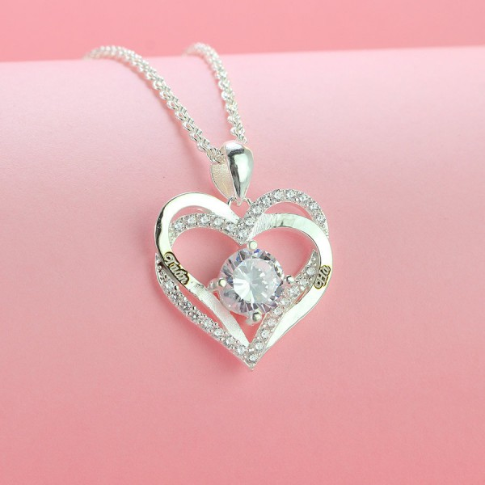

Trang sức được quan tâm dịp Valentine
Thứ tư, 8/2/2023, 08:00 (GMT+7)
Trang sức kim cương, đá quý được nhiều đôi lựa chọn dịp Valentine, bên cạnh các mặt hàng truyền thống như chocolate, hoa tươi, gấu bông... Theo hãng nghiên cứu thị trường Statista, Việt Nam thuộc 5 quốc gia châu Á chi tiêu bình quân đầu người cao nhất vào Lễ tình nhân 2022, với 36 USD (tương đương 850.000 đồng). Con số này có thể tăng cao dịp Valentine này vì được nhiều lứa tuổi hưởng ứng. Đại diện PNJ cho biết thị trường quà tặng Valentine ngày càng đa dạng, từ mẫu mã, mức độ thiết thực đến giá trị sử dụng. Ngoài những mặt hàng truyền thống như chocolate, hoa tươi, gấu bông..., trang sức được người tiêu dùng quan tâm vì sang trọng, tiện lưu giữ. Không ít đôi lứa xem nhẫn, vòng cổ, khuyên tai... là biểu tượng tình yêu.
Không đơn thuần kích cầu giá, doanh nghiệp kỳ vọng tạo "không gian mua sắm hạnh phúc", gắn kết các đôi thông qua các hoạt động như: thử thách tình yêu, chụp hình check-in lưu lại khoảnh khắc ngọt ngào khi mua sắm tại hệ thống cửa hàng, trung tâm PNJ toàn quốc. Kiều Diễm (32 tuổi) - quản lý một công ty đa quốc gia tại TP HCM - nhiều lần tiết lộ chuộng nữ trang đá quý, kim cương với bạn trai. Chị quan niệm nhẫn cầu hôn hay dây chuyền kim cương vừa là tặng phẩm trong mơ với phái nữ, vừa đại diện cho tình yêu bền chặt.
Giới thiệu
Xây dựng website bán trang sức
Follow Me

Liên hệ
Điện thoại: 0329080926
Email: baoquochoa2@gmail.com